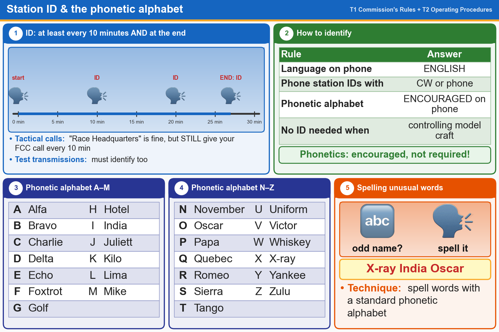

💡 Give your call sign at least every 10 minutes and at the end, in English. Phonetics are encouraged.
Pick an answer for each question, then press Grade at the bottom.
T1F03[97.119(a)]
When are you required to transmit your assigned call sign?
✘A.At least once during each transmission
✘B.At least every 15 minutes during and at the end of a communication
✔C.At least every 10 minutes during and at the end of a communication
✘D.At the beginning of each contact, and every 10 minutes thereafter
T1F02[97.119(a)]
How often must you identify with your FCC-assigned call sign when using tactical call signs such as “Race Headquarters”?
✘A.At the end of every transmission
✘B.Once every hour
✔C.At least every 10 minutes during and at the end of a communication
✘D.Never, the tactical call is sufficient
T1F04[97.119(b)(2)]
What language must you use for identification when using a phone emission?
✘A.English, French, or Spanish
✘B.Any language recognized by the ITU
✔C.English
✘D.Any language recognized by the United Nations
T1F05[97.119(b)(2)]
What method of call sign identification is required for a station transmitting phone signals?
✘A.Send the call sign followed by the indicator R
✘B.Send the call sign followed by the indicator RPT
✘C.Send the call sign using only a phone emission
✔D.Send the call sign using a CW or phone emission
T1D12[97.119(a)]
Which of the following is required when making on-the-air test transmissions?
✘A.Conduct tests only between 10 p.m. and 6 a.m. local time
✔B.Identify the transmitting station
✘C.Notify the FCC of the transmissions
✘D.All these choices are correct
T1D11[97.215]
When may an amateur station transmit without identifying on the air?
✔A.When transmitting signals to control model craft
✘B.When the transmissions are of a brief nature to make station adjustments
✘C.When the transmissions are unmodulated
✘D.When the transmitted power level is below 0.1 watt
T1A03[97.119(b)(2)]
What do the FCC rules state regarding the use of a phonetic alphabet for station identification in the Amateur Radio Service?
✘A.It is required when transmitting emergency messages
✘B.It is required when in contact with foreign stations
✔C.It is encouraged when using phone emissions
✘D.All these choices are correct
T2C03
What technique is used to ensure that voice messages containing unusual words are received correctly?
✘A.Send the words by voice and Morse code
✘B.Use the Q-code “QSR” to ask the receiving station to repeat the words back
✔C.Spell the words using a standard phonetic alphabet
✘D.All these choices are correct